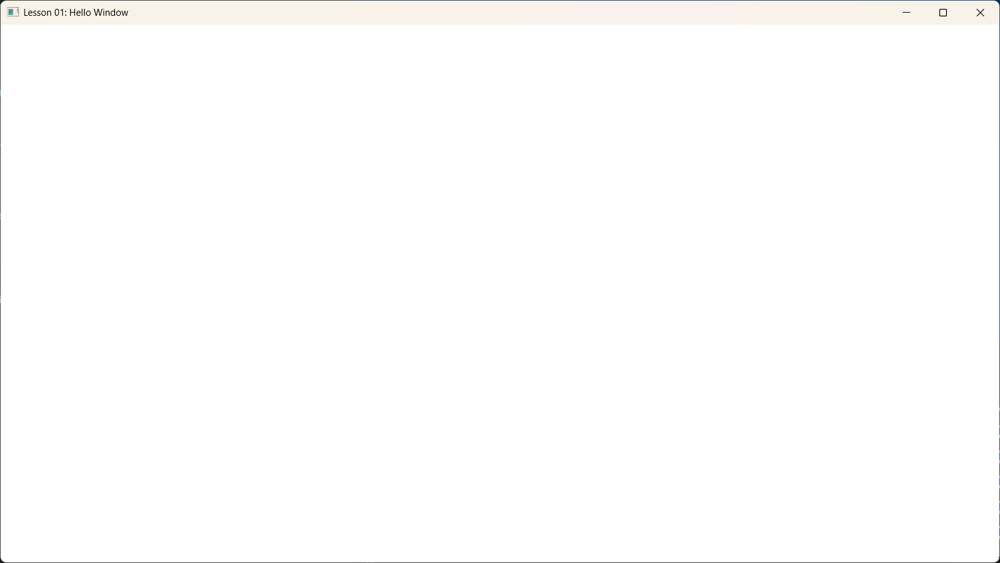

Lesson 01: Hello Window

Goal (目标)
本课的目标非常简单：创建一个标准的 Windows 窗口。
在 DirectX 12 能够绘制任何像素之前，我们需要一个操作系统层面的窗口句柄 (HWND) 来承载我们的渲染内容。
Content (核心内容)
Windows 图形编程的基础是 Win32 API。虽然现在有很多封装库（如 GLFW, SDL），但理解底层的窗口创建过程对于排查问题非常有帮助。
本课主要包含以下三个步骤： 1. 注册窗口类 (Register Window Class): 告诉操作系统我们的窗口长什么样（图标、光标、处理函数等）。 2. 创建窗口 (Create Window): 实例化一个窗口对象。 3. 消息循环 (Message Loop): 保持程序运行并响应用户的输入（点击、键盘、调整大小）。
Detailed Code Explanation (代码详解)
1. WindowProc (窗口过程函数)
这是窗口的“大脑”。每当有事情发生（用户点了关闭按钮、按了键盘），操作系统就会调用这个函数。
LRESULT CALLBACK WindowProc(HWND hwnd, UINT uMsg, WPARAM wParam, LPARAM lParam) {
switch (uMsg) {
case WM_DESTROY:
// 当窗口被销毁时，发送退出消息，结束消息循环
PostQuitMessage(0);
return 0;
}
// 对于我们不关心的消息，通过 DefWindowProc 交给系统默认处理
return DefWindowProc(hwnd, uMsg, wParam, lParam);
}
2. Main Entry & Registration (入口与注册)
int WINAPI WinMain(...) {
// 1. 定义窗口属性
const wchar_t* CLASS_NAME = L"VibeDX12Window";
WNDCLASS wc = {};
wc.lpfnWndProc = WindowProc; // 绑定处理函数
wc.hInstance = hInstance; // 当前应用程序实例句柄
wc.lpszClassName = CLASS_NAME; // 给这一类窗口起个名字
// 向系统注册。如果不注册，后续无法根据 CLASS_NAME 创建窗口
RegisterClass(&wc);
3. Create Window (创建窗口)
// 2. 创建窗口实例
HWND hwnd = CreateWindowEx(
0,
CLASS_NAME, // 使用刚才注册的类名
L"Lesson 01: Hello Window", // 标题栏显示的文字
WS_OVERLAPPEDWINDOW, // 标准窗口样式 (带标题栏、最大化最小化按钮)
CW_USEDEFAULT, CW_USEDEFAULT, CLIENT_WIDTH, CLIENT_HEIGHT, // 位置和大小
NULL, NULL, hInstance, NULL
);
if (hwnd == NULL) return 0; // 创建失败保护
ShowWindow(hwnd, nCmdShow); // 显示出来！
4. Message Loop (消息泵)
如果没有这个循环，程序初始化完就会立刻退出。我们需要不断地从系统队列里“泵”出消息。
MSG msg = {};
// GetMessage 会阻塞程序直到有消息到来
// 如果收到 WM_QUIT (由 PostQuitMessage 发送)，GetMessage 返回 false，循环结束
while (GetMessage(&msg, NULL, 0, 0)) {
TranslateMessage(&msg); // 翻译键盘消息 (如将按键转换成字符)
DispatchMessage(&msg); // 将消息分发给 WindowProc 处理
}
GetMessage 换成 PeekMessage，因为我们希望在没有消息时也能全速渲染画面，而不是阻塞等待。